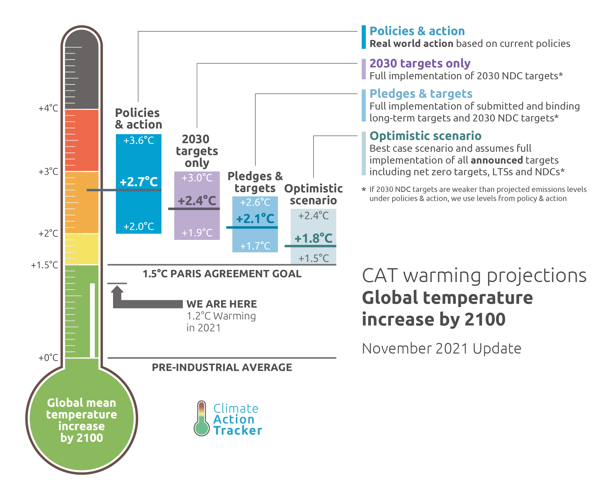
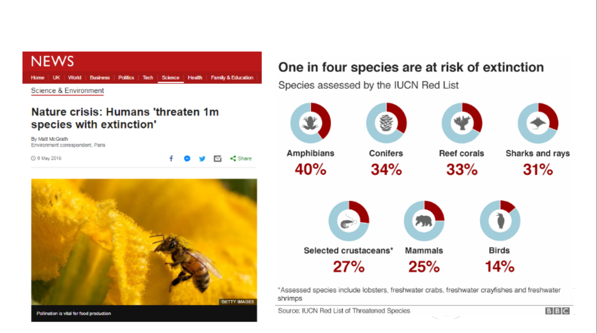
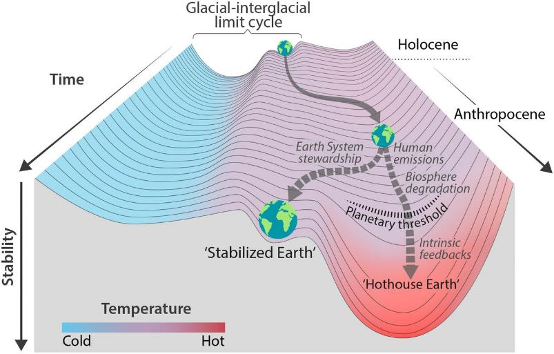

Extinction Rebellion (XR) ist eine gewaltlose Bewegung für direkte Aktion und zivilen Ungehorsam. Wir drängen Regierungen, Firmen und Gesellschaft zum Handeln gegen Klimakatastrophe und ökologischen Zusammenbruch.
Das Sonnenlicht erwärmt die Erdoberfläche. Die Wärme wird in infrarote, diffuse Strahlung umgewandelt. Einige dieser Infrarotstrahlen verlassen die Atmosphäre, andere treffen auf Treibhausgasmoleküle und erwärmen die unteren Teile der Atmosphäre. Animation: Yannick Urs Schillinger Quelle:https://edu.lu.lv/mod/book/view.php?id=39258
CO2 treibt die Temperaturen nach oben
Die Erhitzung folgt den Prognosen exakt
Veränderungen der globalen Oberflächentemperatur im Vergleich zu 1850-1900. (a) Veränderung der globalen Oberflächentemperatur (Zehnjahresdurchschnitt) wie rekonstruiert (1-2000) und beobachtet (1850-2020); (b) Veränderung der globalen Oberflächentemperatur (Jahresdurchschnitt) wie beobachtet und simuliert unter Verwendung menschlicher und natürlicher Faktoren (hellbraun) und nur natürlicher Faktoren (grünlich) (beide 1850-2020). (Bildnachweis: Abbildung SPM.1 aus AR6 WGI Summary of Policymakers, IPCC)
Stop burning things!
Wir haben kein CO2-Budget mehr
Europa wird heisser und feuchter
IPCC AR6 WG1, Regional Factsheet Europe
Nichthandeln beschleunigt die Katastrophe

"Today’s IPCC Working Group 1 report is a code red for humanity. The alarm bells are deafening, and the evidence is irrefutable: greenhouse‑gas emissions from fossil-fuel burning and deforestation are choking our planet and putting billions of people at immediate risk. Global heating is affecting every region on Earth, with many of the changes becoming irreversible. (António Guterres)
Rückkopplungen können die Erhitzung verstärken
Weniger Reflexion durch Eis
Methananreicherung durch Auftauen von Permafrost
Potentielle Kaskaden von Tipping Points
Will Steffen et al. PNAS 2018;115:33:8252-8259
Risiko Hothouse-Earth
Will Steffen et al. PNAS 2018;115:33:8252-8259
Das war nur ein Teil des Problems
Wir gefährden das ganze Erdsystem
Die Erde hat Land- und Meeres-Ökosysteme. Wir zerstören beide.
Intensiv-Landwirtschaft hat die Wildnis verdrängt
Entwaldung reduziert CO2-Abbau, Biodiversität und Feuchtigkeitsregulierung
Diese Prozesse führen zu Versteppung und Wüstenbildung
Die Ozeane sind eine CO2-Senke und ernähren viele Menschen. Unser Überleben hängt von ihnen ab.
Die Erwärmung der Meere reduziert gelöstes O2, erhöht den Säuregehalt, tötet Ökosysteme, ändert Strömungen und zerstört Eiskappen.
Das sechste Massenaussterben hat begonnen

Wilde Biomasse (Fleisch) verschwindet
Daten von Bar-On YM, Phillips R, Milo R (2018) PNAS 115:6506–6511.
Vor 10.000 Jahren vs. heute
Unsere Kinder werden den Reichtum, den wir geerbt haben, vielleicht nie kennenlernen.
Wir gefährden auch die unscheinbaren Arten
Und wenn wir die Grundlage unserer Ernährung zerstören, zerstören wir unsere Zukunft
Politik und Wirtschaft beschleunigen die Katastrophen
Wir haben nur wenige Jahre Zeit!
Stability landscape showing the pathway of the Earth System out of the Holocene and thus, out of the glacial–interglacial limit cycle to its present position in the hotter Anthropocene. Will Steffen et al. PNAS 2018;115:33:8252-8259
![Veränderungen der globalen Oberflächentemperatur im Vergleich zu 1850-1900. (a) Veränderung der globalen Oberflächentemperatur (Zehnjahresdurchschnitt) wie rekonstruiert (1-2000) und beobachtet (1850-2020); (b) Veränderung der globalen Oberflächentemperatur (Jahresdurchschnitt) wie beobachtet und simuliert unter Verwendung menschlicher und natürlicher Faktoren (hellbraun) und nur natürlicher Faktoren (grünlich) (beide 1850-2020). (Bildnachweis: Abbildung SPM.1 aus AR6 WGI Summary of Policymakers, IPCC)](pics/ipcc-ar6-surface-temperatures.png)